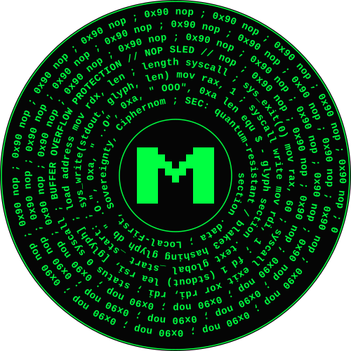

mirstat is a peer-to-peer electronic cash system engineered from the ground up for constrained edge environments (specifically Cortex-A53/A72/A76 architectures). It entirely abandons elliptic curve mathematics in favor of post-quantum hash functions.
By enforcing sequential CPU mining, forcing all UTXOs into uniform power-of-2 denominations, it creates a robust, relatively private financial network that cannot be dominated by parallel ASICs or dismantled by blockchain surveillance firms.
In traditional blockchains, blocks are distinct data structures linked by their header hashes. mirstat elevates this by maintaining a continuous, mathematically chained BLAKE3 mirstat for transactions, while binding it to the chain using sequential header hashing.
The mirstat tracks the continuous mathematical state of the UTXO set. When a miner processes a block, they construct a Block Header (containing the new mirstat, the state root, and the previous header hash), and subject it to exactly 1,000,000 sequential BLAKE3 compression cycles. Every transaction permanently mutates this internal state, securely anchoring the ledger to a sequential proof of time.
mirstat is a live, functional network. The chain is producing blocks, people are mining on commodity hardware, and the coin is actively trading. Choose how you want to interact with the ecosystem below.
MDS is actively traded against USDT on the SafeTrade exchange.
Go to Exchange ↗Get the full GUI wallet or CLI binaries for Windows, Mac, and Linux.
GitHub Releases ↗Chat with other miners, developers, and users building the network.
Join Discord ↗If you don't want to download the full desktop node just yet, you can use the mirstat Web Wallet. It runs entirely in your browser, connects directly to peers via WebRTC, and can even solo-mine using your CPU's WASM worker threads. Just remember to not use the SAME web wallet on different devices and run "rescan" regularly!
Elliptic Curve Cryptography (secp256k1) is vulnerable to Shor's algorithm via quantum computers. mirstat uses exactly zero elliptic curve mathematics, relying strictly on the BLAKE3 hash function for all cryptographic signatures, commitments, and proofs.
Standard receiving keys and change outputs use WOTS+. Because hash-based signatures reveal parts of the private key during use, WOTS keys must never sign more than once.
To prevent accidental key reuse across sibling UTXOs (coins sent to the same address), mirstat enforces a strict "co-spend grouping" rule in the wallet. If a user attempts to spend one coin, the wallet will autonomously pull in all sibling coins at that address. Spending them in the exact same transaction produces an identical commitment hash, meaning the WOTS signature is identical, resulting in zero additional key leakage.
Most WOTS implementations use w=8 (8 bits per digit), which creates 32 message chains of max depth 255. mirstat uses an extreme parameter of w=16.
The Tradeoff: By using w=16, the signature size shrinks from ~1,088 bytes down to exactly 576 bytes (18 chains × 32 bytes). The cost is CPU computation: signing or verifying requires up to 65,535 hashes per chain. This is solved via SIMD acceleration.
If a user requires a static, reusable address (e.g., for a donation page or a mining pool payout), mirstat wraps thousands of WOTS keys into an MSS binary tree. The Master Public Key is the root of the Merkle tree.
Generating a default height-10 tree (1,024 signatures) locally takes ~1-2 seconds on modern CPUs. The signature size increases logarithmically: a 576-byte WOTS payload + (Height × 33 bytes for the authentication path).
To prevent replay attacks during chain reorgs, the consensus engine maintains a spent_addresses database table.
For standard WOTS, the address hash is burned. For MSS, burning the address would destroy the entire tree. Instead, the protocol dynamically extracts the specific leaf's WOTS public key from the MSS signature and burns that specific nullifier. If the exact same transaction is replayed during a reorg, the commitment hashes match and it is accepted. If a different transaction attempts to reuse that leaf, it is rejected by consensus.
With w=16, WOTS chain iterations vary wildly. Chain 0 might need 5 hashes, while Chain 1 needs 60,000 hashes. Standard scalar execution handles these one by one.
mirstat accelerates this using hand-rolled hardware SIMD registers (AVX2 256-bit on x86, NEON 128-bit on ARM). But because SIMD lanes execute in strict lockstep, how do you handle varying lengths without breaking the pipeline?
Before executing, the node sorts the required WOTS chains by depth (descending). It packs them into batches (e.g., 8 chains per AVX2 register). The SIMD loop then runs up to the maximum iterations required by the longest chain in that specific batch.
As the loop progresses, a mask checks if the current step matches a specific lane's target depth. If it does, it extracts and saves that lane's 32-byte state. The lane then continues to compute garbage hashes ("ghost hashing") alongside its neighbors until the longest chain finishes.
Even with millions of wasted "ghost" cycles, keeping the CPU pipeline saturated via branchless SIMD results in a 10x faster signature generation on edge devices.
// Example WGSL/SIMD extraction mask logic
for step in 0..max_iters {
hw = compress_8way(&cv, &msg, 32);
// SIMD Masking Extraction: capture each lane's result the moment it
// reaches its target iteration, then let it ghost-hash freely.
for lane in 0..8 {
if iters[lane] > 0 && step == iters[lane] - 1 {
results[lane] = extract_hash(&hw, lane);
}
}
}Traditional Proof-of-Work (like SHA-256) operates in O(1) time and O(N) space. Finding a nonce is like buying lottery tickets: if you buy 100,000 tickets at once, you find the winner 100,000 times faster. ASICs achieve massive hashrates by stamping millions of parallel hash cores onto a single silicon die.
mirstat inverts this model using Sequential Hashing. Finding a nonce is no longer a lottery; it is a marathon.
To mine a block, a node must calculate 1,000,000 BLAKE3 hashes in a strict sequence: H_n = BLAKE3(H_{n-1}). Because the input of the next hash relies entirely on the output of the previous, the computation cannot be unrolled or divided across multiple cores.
In Bitcoin, parallel hashrate is H = C / L (where C is cores, L is latency). ASICs win by scaling C to millions.
In mirstat, a trial requires S sequential hashes. The time for one trial is S × L_core. An ASIC designer must optimize L_core (clock speed) because increasing parallel cores requires duplicating the entire 1,000,000-step state machine per core, demanding massive silicon area.
Because silicon physics caps clock speeds around 4–5 GHz, an ASIC cannot physically be millions of times faster than a standard CPU. The advantage is strictly bounded by single-thread execution limits, creating a provable ~1000:1 hardware ceiling between a supercomputer and a Raspberry Pi.
While the sequential nature of the PoW chain prevents ASICs from collapsing the computation into a single cycle, nodes must still maximize hardware utilization to search multiple nonces concurrently. mirstat achieves this via bare-metal hardware integrations.
On x86_64 architectures, mirstat uses handwritten AVX2 intrinsics to process 8 nonces concurrently in 256-bit registers. However, ARM NEON registers are only 128-bit (4 lanes).
Modern ARM out-of-order execution cores (like the Cortex-A76 in the Raspberry Pi 5, or Apple M-Series chips) feature two independent ASIMD pipelines. mirstat exploits this by manually interleaving two separate 4-way NEON streams in the assembly code. This intentionally exceeds the physical register count (32), forcing the compiler to spill to the L1 cache. The CPU then hides the L1 latency behind the dual-issued ALU work, resulting in nearly 2.0x throughput compared to a standard 4-way implementation.
GPUs are designed for massive parallelism, but sequential hashing (1,000,000 iterations) takes hundreds of milliseconds to complete a single chain. If a GPU compute shader runs for that long without yielding, the Operating System assumes the graphics driver has crashed and triggers a TDR (Timeout Detection and Recovery), killing the miner.
mirstat's WGSL GPU miner solves this by breaking the 1,000,000-iteration chain into tiny micro-dispatches (e.g., 2,000 hashes at a time). Between each dispatch, the shader saves the exact 32-byte intermediate state of every single nonce (often tens of thousands) into a persistent VRAM storage buffer. It then yields to the OS, checks for network cancellations, and re-dispatches, picking up exactly where it left off.
Trustless Hardware: Because GPU drivers can be buggy or non-deterministic, the GPU kernel is treated strictly as an oracle. It only surfaces candidate nonces. The CPU mathematically re-verifies every winning nonce using the canonical scalar function before broadcasting it to the network, guaranteeing consensus safety.
Sliding-window difficulty algorithms (like LWMA or Bitcoin's 2016-block window) are highly vulnerable to time-warp attacks, hash-and-flee exploits, and echo effects. mirstat adjusts difficulty continuously on every block based on the absolute time elapsed since genesis.
If the network hashrate spikes and blocks are mined in 30 seconds, the ASERT algorithm guarantees the difficulty will exactly double every 4 hours until the 60-second equilibrium is restored.
Calculating 2^x requires floating-point math (IEEE 754). Different CPU architectures (x86 vs ARM) or even different compiler optimization flags can yield slightly different results at the far decimal places. In a consensus system, a 1-bit discrepancy results in a permanent chain fork.
mirstat solves this natively using deterministic integer math via a 16.16 fixed-point Taylor polynomial approximation. It calculates the fractional exponent strictly using bitwise shifts, guaranteeing cross-architecture determinism.
Most blockchains rely on arbitrary "magic numbers" for finality (e.g., Bitcoin's 6-block rule). This assumes the network's hashpower distribution is static and universally honest. In reality, networks experience partitions, hashpower drops, and active 51% attacks.
mirstat solves this by treating finality as a dynamic probability problem. Every node runs a Bayesian Finality Estimator that continuously models network health to calculate the exact depth z required to keep the risk of a chain reorganization below a strict 10-6 threshold.
In Bitcoin, an attacker renting hashpower for a 51% attack simply waits 6 blocks to execute an exchange double-spend. The cost of the attack is fixed and predictable.
In mirstat, an attacker trying to secretly mine a shadow chain will inevitably cause orphan races. Every orphan increments β (adversarial prior) on honest nodes. As β rises, the variance of the Beta distribution widens, increasing the "tail risk". The integral forces the safe depth z to skyrocket.
Instead of waiting 6 blocks, merchants and exchanges are mathematically instructed by their nodes to wait 100+ blocks. The attacker is forced to burn millions of dollars sustaining their 51% hashpower monopoly for hours or days.
Because mirstat uses Sequential Hashing, traditional Bitcoin stratum protocols (where the pool builds the block and sends just the header to the miner) do not work. Miners must construct the block template locally to run the 1,000,000-hash state progression.
To enable pooled mining without requiring miners to blindly trust the pool operator, mirstat employs a Decentralized-Auditable Merkle Precommitment.
When a miner connects, the pool doesn't hold the funds in custody. Instead, the pool's block template pays the miners directly in the coinbase transaction, strictly proportional to their submitted shares.
To prove it isn't skimming or omitting miners, the pool builds a Merkle Tree of all current miner scores: H(Miner_Address || Score). The 32-byte Merkle Root is embedded into the fee coin's salt inside the block template.
Before computing a single hash, a miner's software queries the pool's HTTP Audit API for an O(log N) Merkle inclusion proof. If the pool operator lies about the miner's score or omits them, the local node instantly detects the mismatch and disconnects before hashing.
The pool server accepts shares at a lower difficulty target (e.g., 20 leading zeros instead of 30) and tallies them in an ACID database. If a submitted share happens to meet the actual network difficulty, the pool server immediately broadcasts it to the network as a full block win.
Because the payouts are handled directly via the Coinbase transaction generated in the block template, there is no delayed payout process, no minimum withdrawal threshold, and no pool wallet that can be hacked or seized.
Sound money requires an unforgeable costliness to produce and a strictly bounded, mathematically predictable supply schedule. mirstat enforces a disinflationary emission curve that asymptotically approaches a hard cap, but includes a vital tail emission to ensure perpetual security.
Because mirstat enforces strict power-of-2 UTXO amounts (to fracture surveillance graphs), standard base-10 decimals are messy. Instead, mirstat uses computer-storage binary prefixes:
The initial block reward is exactly 1 gMDS per block. The total maximum lifetime supply is roughly 1.05 Million gMDS (1.12 Quadrillion base MDS units).
The block reward begins at 1 gMDS per 60-second block. Every 525,600 blocks (exactly one year), the reward is bit-shifted to the right (halved).
Unlike Bitcoin, which will eventually hit a block reward of exactly 0, mirstat enforces a Tail Emission. After 30 years, the block reward reaches a permanent floor of 1 unit per block. This guarantees miners are always mathematically incentivized to process blocks and secure the chain, even if transaction volume temporarily drops to zero.
Most blockchains operate a single-dimensional fee market: you pay capital to buy block space. mirstat decouples transaction inclusion into two distinct markets, protecting edge nodes from spam while keeping fees predictable.
Because Commit transactions do not transfer value, they cannot pay a standard fee. Instead, users pay for mempool inclusion using CPU cycles. The required Proof-of-Work scales dynamically based on mempool congestion. If the network is quiet, a commit takes ~15 milliseconds to generate. If the network is under a DoS attack, the PoW requirement skyrockets, bankrupting the attacker's CPU resources before they can exhaust node RAM.
Reveal transactions execute the actual state change and consume block space. Therefore, they must pay a capital fee. The node enforces a minimum relay fee of 10 units per Kilobyte.
To guarantee that mirstat can run on a 512MB Raspberry Pi indefinitely, the Mempool is mathematically capped at 100 Megabytes or 9,000 transactions, whichever is reached first.
When the mempool fills up, the node initiates deterministic Replace-By-Fee (RBF) eviction. The node calculates the fee rate (Fee / Byte Size) of all pending transactions and permanently drops the lowest-paying transactions to make room for higher-paying ones. Because block space is scarce, users must bid against each other to have their Reveals mined during high congestion.
mirstat was engineered with absolute mathematical certainty that no pre-mining, no developer allocation, and no hidden coins ever existed. The entire genesis block is deterministically derived from a real, verifiable Bitcoin block mined in 2026 — making it impossible to have started the chain one second earlier.
The genesis mirstat is not arbitrary. It is constructed by hashing a specific Bitcoin block that everyone could independently verify existed on the Bitcoin network:
Anyone can open any Bitcoin explorer (e.g. mempool.space, blockchain.com) and confirm this exact block existed. Because the mirstat genesis depends on its hash, the mirstat chain could not have been started before that Bitcoin block was mined.
The genesis coinbase creates exactly the initial reward of 1 gMDS (1,073,741,824 MDS) — split into two power-of-2 outputs of 536,870,912 each.
Instead of real public keys, the address and salt fields contain the following plaintext inscription, permanently embedded into the blockchain on disk:
This is the exact Rust code that generates the genesis block (from the canonical implementation):
impl State {
pub fn genesis() -> (Self, Vec<CoinbaseOutput>) {
// Bitcoin block anchor
const BITCOIN_BLOCK_HASH: &str = "000000000000000000018f5ad5625d43356136c2e50c6dc18967a90a18f0af2e";
const BITCOIN_BLOCK_HEIGHT: u64 = 938708;
const BITCOIN_BLOCK_TIME: u64 = 1772274770;
let anchor = hash(BITCOIN_BLOCK_HASH.as_bytes());
// --- The Genesis Inscription (split across address + salt) ---
let mut chunk0 = [0u8; 32]; chunk0.copy_from_slice(b"Harvest Now, Decrypt Later: The ");
let mut chunk1 = [0u8; 32]; chunk1.copy_from_slice(b"Quantum Era's Encryption Challen");
let mut chunk2 = [0u8; 32]; chunk2.copy_from_slice(b"ge (Published Feb 24, 2026, by R");
let mut chunk3 = [0u8; 32]; chunk3[..13].copy_from_slice(b"BC Disruptors)");
let genesis_coinbase = vec![
CoinbaseOutput { address: chunk0, value: 536_870_912, salt: chunk1 },
CoinbaseOutput { address: chunk2, value: 536_870_912, salt: chunk3 }
];
let initial_mirstat = hash_concat(&anchor, &BITCOIN_BLOCK_HEIGHT.to_le_bytes());
// ... (difficulty target, MMR, etc.)
(state, genesis_coinbase)
}
}The address fields contain human-readable text instead of valid WOTS+ or MSS public keys. There is no corresponding private key anywhere in the universe that can spend them. The outputs are therefore provably unspendable — they are permanently removed from the circulating supply the instant the genesis block is created. This is the cryptographic equivalent of burning the initial coins in public.
mirstat achieves profound transaction privacy without compromising the auditability of the global state.
In standard blockchains, UTXOs have unique, highly specific amounts (e.g., 1.45239 coins). These exact amounts act as cryptographic fingerprints. When a user sends 1.0 coins and receives 0.45239 back as change, blockchain surveillance firms can easily deduce which output was the payment and which was the change, tracing value graphs across dozens of hops even through naive mixers.
mirstat radically solves this by forcing all UTXOs to be strict powers of 2 (1, 2, 4, 8, 16, 32...).
Because there are no arbitrary denominations, every 16-value coin looks identical to every other 16-value coin on the network. A user cannot send 10 coins; their wallet automatically breaks the transaction down into independent 8 and 2 coin sends. This naturally fractures tracking graphs.
Standard mempools broadcast transaction details in cleartext, allowing miners to reorder or front-run trades (Miner Extractable Value). mirstat enforces a two-phase Commit-Reveal protocol:
The Commit phase binds the transaction inputs and outputs via a BLAKE3 hash. The network sees a commit, but has no idea who is sending money to whom, or how much. Only after the commit is permanently mined into a block does the user broadcast the Reveal, providing the signatures to execute the spend.
This mechanism blinds transaction topology prior to block inclusion and enforces perfect subset sum ambiguity upon execution.
To prevent attackers from filling the mempool with free commitments (which cost zero fees), the node dynamically enforces an anti-spam PoW requirement (spam_nonce) that scales automatically under network congestion.
If the mempool has <500 pending commits, the requirement is 24 leading zero bits (~16M hashes, ~15ms). If the pool fills to 900+, the requirement jumps to 30 bits (~1B hashes, ~1s), throttling spam while remaining virtually instant for legitimate users submitting a single transaction.
mirstat ships a denomination-uniform CoinJoin mixer built directly into the wallet and P2P layer. The final on-chain transaction is an ordinary Reveal that passes every validation rule. The privacy guarantee is mathematical: because every input and every output (except the mandatory fee coin) has identical power-of-2 value, subset-sum analysis yields zero information about the input→output mapping.
wallet/coinjoin.rs)MIN_MIX_PARTICIPANTS = 2, MAX_MIX_PARTICIPANTS = 161 covers the mandatory network feeAny node can initialise a session by broadcasting a MixAnnounce message containing a unique MixID and the target denomination.
The coordinator broadcasts the session. Peers prove they control a real coin (and are not Sybils) by solving a BLAKE3 PoW challenge bound to their PeerId and coin_id. This anti-Sybil mechanism requires 30 leading zero bits (approx. 1 billion hashes), heavily punishing Sybil attackers.
Participants register their InputReveal and desired OutputData. When the session reaches the minimum participant count and the fee input is supplied, the coordinator produces a deterministic MixProposal (see MixSession::proposal()). Inputs are sorted by coin_id (mix coins first, fee last); outputs are sorted by coin_id. This ordering guarantees every honest participant computes the exact same commitment hash.
This is the trustless verification step. Each peer independently checks that the coordinator has not altered, omitted, or stolen their outputs before signing the single 32-byte commitment hash. If the check fails, the peer aborts — the coordinator gains nothing. The collected signatures are later assembled into the final Reveal transaction.
After the reveal is constructed, the wallet routes the final Reveal transaction through Dandelion++ to decouple the broadcasting node’s IP from the transaction payload.
mirstat discards the traditional unbounded UTXO database model (like Bitcoin's LevelDB). Instead, unspent outputs, pending commitments, and chain history are mathematically accumulated into cryptographically verifiable data structures, strictly bounding the RAM requirements for edge devices.
The global state_root of the mirstat network is a combination of two distinct data structures:
Active UTXOs and mempool commitments are stored in a 256-level Sparse Merkle Tree. To achieve O(log N) insertion and verification without overflowing the RAM of edge devices, the tree is split into two access tiers:
While the SMT tracks active state, the MMR tracks historical state. Every time a block is mined, its final_hash is appended to the MMR. This provides an append-only log of the entire chain history, allowing light clients to request O(log N) inclusion proofs to verify that a specific block existed at a specific height in the past.
Unlike traditional blockchains where every node must store the entire history forever, mirstat uses a Cap-and-Trade market for historical data storage.
Nodes can safely discard historical blocks (Pruning Mode) without being penalized by their peers, provided they hold a Pruning License. These licenses are created by Archiver nodes who cryptographically prove they possess the historical data.
To issue a license, an Archiver must perform heavy, address-salted PoW over historical block payloads. The resulting Merkle Root is stored on-chain inside a Confidential UTXO (a State Thread). This creates a verifiable, tradable Bearer Asset representing archival capacity.
A license is only as good as the Archiver backing it. Nodes continuously audit license issuers using MMR Gossip Challenges sent over the ephemeral P2P Chat bus. If an Archiver fails to provide the requested data block, nodes update their internal Bayesian estimator, slashing the Archiver's reputation.
If an Archiver's reputation drops too low, the Pruning Licenses they issued lose their exemption power, forcing Pruners to buy higher-quality licenses from reliable Archivers, creating a free market for decentralized storage.
A major issue with sequential hashing is the sync time. If a node goes offline for a month, replaying 1,000,000 hashes per block to catch up would take days on a Raspberry Pi. mirstat solves this via cryptographic Fast-Forwarding.
Nodes save full state snapshots to disk every 100 blocks. When a node is syncing, it can download a recent snapshot from a peer instead of starting from genesis.
How does a node trust a peer's snapshot without replaying the history? It uses the headers. The node downloads the lightweight headers and verifies the Proof-of-Work. If the very first header mathematically builds exactly on top of the downloaded snapshot's mirstat, the snapshot is authentic.
The Security Gate: To prevent an attacker from forging a fake snapshot and mining just 1 or 2 blocks on top of it, mirstat enforces a PRUNE_DEPTH rule. A node will only trust a snapshot if the peer can provide 1,000 valid blocks of Proof-of-Work natively built on top of it (1 billion sequential hashes). This makes state injection economically impossible.
Light wallets need to know when they receive funds, but asking a public RPC node "Do you have any transactions for Address X?" completely destroys user privacy, linking their IP address to their wallet balance.
mirstat implements client-side block filtering using Golomb-Rice Coding (P=20). Instead of asking for specific addresses, the wallet downloads a tiny, highly compressed filter (a few kilobytes) for each block.
final_hash.Every UTXO in mirstat is locked by a compiled bytecode script. The VM executes witness inputs pushed onto the SmallVec stack, then evaluates the locking script. Execution succeeds if and only if the final top-of-stack item is exactly [1].
The stack machine in mirstat is Turing-incomplete by design — no loops, no unbounded recursion, no on-chain state mutation. However, it features output introspection via OP_SUM_TO_ADDR and State Threads via OP_READ_INPUT_STATE. These capabilities unlock Covenants, AMMs, native tokens, and DAOs without any of the security risks associated with EVM smart contracts.
Midscript is a statically-analyzed, macro-expanded programming language designed specifically for the mirstat Virtual Machine. Where languages like C abstract the physical hardware of a von Neumann architecture, Midscript abstracts a deterministic, resource-constrained cryptographic stack machine.
The language operates in an environment entirely devoid of a heap, call frames, pointers, or garbage collection. Midscript exists purely as a compile-time semantic analyzer. Variables are not mapped to memory addresses; they are calculated topological offsets on a physical execution stack. When Midscript is compiled, all high-level abstractions dissolve entirely, producing a contiguous, flattened array of zero-overhead native opcodes.
The foundational invariant of the mirstat VM is the Clean Stack Rule. A script is evaluated as mathematically Valid if and only if, upon the execution of the final opcode, the physical stack contains exactly one item, and that item is strictly equal to the boolean representation of True (0x01).
If the stack is empty, if it resolves to zero, or if it contains leftover garbage items (e.g., [0x01, 0x05]), the network violently rejects the transaction. Midscript is engineered to satisfy this theorem systematically via strict lexical block-scoping.
Before understanding the language, one must understand the machine architecture it targets. The mirstat VM is Turing-incomplete by design, enforcing strict O(1) execution time bounds per opcode to prevent halting-problem vulnerabilities and infinite loops.
When a transaction attempts to spend a UTXO, the node constructs a physical execution environment. The VM begins in a halted, empty state. First, the Witness (the cryptographic proofs provided by the spender) is sequentially pushed onto the stack. Only then does the VM begin executing the compiled Midscript bytecode.
CHECKSIG, CHECKSIGVERIFY) are evaluated dynamically at runtime.The mirstat VM natively understands only raw byte arrays. To ensure execution safety and prevent illegal mathematical operations on cryptographic hashes, the Midscript compiler overlays a bipartite type system.
int): Base-10 numerical literals (e.g., 1000). The compiler converts these into strict little-endian byte sequences and emits the PUSH_INT opcode. All mathematical operators strictly require int operands.hex): Raw byte sequences enclosed in quotes (e.g., "a1b2c3"). Length must be even. The compiler emits PUSH_HEX. Hex strings cannot be evaluated mathematically.true and false are semantic sugar; the compiler emits PUSH_INT 1 and PUSH_INT 0 respectively.Because smart contracts cannot prompt for user input at runtime, external data (signatures, public keys, routed amounts) is pushed to the physical stack before the script begins executing. This pre-loaded data constitutes the Witness.
To ingest this data safely into the compiler's type-tracker, Midscript provides typed pop directives. These functions do not emit opcodes; they simply instruct the compiler to map an identifier to a pre-existing item on the physical stack.
// The Witness pushed [Signature, Amount]. The stack operates as LIFO.
// Therefore, 'Amount' is at the top of the stack, and 'Signature' is underneath it.
var amount = pop_int(); // Compiler registers top item as type 'int'
var signature = pop_hex(); // Compiler registers the next item as type 'hex'Unlike languages that map variables to RAM or register addresses, Midscript maps variables strictly to a shifting physical stack depth.
OP_PICK)When the var keyword is used, the compiler registers that variable's current index in its internal locals array. Later, when the variable is referenced in an expression, the CodeGen engine dynamically calculates its exact physical depth relative to the current execution head.
The compiler then emits the most efficient sequence of opcodes to copy that value to the top of the stack:
DUPOVERPUSH_INT N followed by PICK
Midscript uses brackets { ... } to define lexical scope. When a block is opened, the compiler snapshots the environment. When the block closes, the compiler automatically determines how many new variables were created within that block, and injects exactly that many DROP opcodes into the bytecode.
{
var temp_x = pop_int();
var temp_y = pop_int();
assert(temp_x > temp_y);
} // The compiler observes 2 local variables going out of scope.
// It automatically injects 'DROP DROP' here to wipe them.
true; // The stack is now perfectly clean, containing only [0x01].While variables can be reassigned via standard syntax (e.g., x = x + 10;), Midscript is fundamentally hostile to deep mutability. This is dictated by the limitations of the underlying VM architecture.
To mutate a variable deep in the stack, a VM must pull the item to the top, destroy it, push the new value, and bury it back down to its original depth. Because the mirstat VM explicitly excludes arbitrary-depth replacement opcodes (like Bitcoin's disabled OP_ROLL) to prevent CPU-stalling attacks, variable mutation is physically restricted to Depth 1 and Depth 2.
var a = pop_int(); // Current Depth 2
var b = pop_int(); // Current Depth 1
a = a + 10; // Valid. Emits: [Eval Math] -> ROT -> DROP -> SWAP
b = b + 10; // Valid. Emits: [Eval Math] -> SWAP -> DROP
// If 'a' fell to depth 3, compilation would immediately halt with a Semantic Error.The idiomatic approach to state progression in Midscript is Variable Shadowing. Because the VM stack supports up to 64 items, developers should simply declare new variables (var new_a = a + 10;). This leaves the old value buried safely in the stack to be automatically DROPped at the end of the lexical block, entirely bypassing the severe opcode cost and restrictions of physical stack manipulation.
Midscript parses standard infix expressions according to traditional mathematical precedence rules (Multiplication > Addition > Comparison > Logical). The Abstract Syntax Tree (AST) parser automatically transposes these into postfix stack bytecode.
For example, the expression a + b * c is compiled into the physical sequence: <fetch b> <fetch c> MUL <fetch a> ADD.
The let keyword defines a compile-time constant. If the CodeGen engine detects an arithmetic operation occurring strictly between static literals or constants, it evaluates the mathematics entirely during compilation and emits a single, finalized PUSH_INT.
For example, 1000 * 60 * 24 never generates MUL opcodes in the final bytecode; the compiler directly injects PUSH_INT 1440000. This drastically reduces contract size and runtime execution cost.
To preserve instruction-set simplicity, the mirstat VM supports only EQUAL and GREATER_OR_EQUAL natively. The Midscript CodeGen engine seamlessly synthesizes all remaining comparison and logical operators at compile time.
Compiles directly to the native IF, ELSE, and ENDIF opcodes. Crucially, the IF opcode physically consumes the top stack item. The compiler implicitly ensures the evaluated condition is left on the stack prior to the jump, guaranteeing stack alignment.
The switch construct abstracts sequential equality testing. The compiler generates an unbroken chain of DUP, evaluation, EQUAL, and IF ... ELSE jumps. Every case block is fully sandboxed lexically, meaning variables declared within a case are dropped before the switch terminates.
A specialized architectural version of switch designed exclusively for the top-level contract entry point. It evaluates against an implicit ImplicitTop token—assuming the Witness stack has provided an integer explicitly dictating the execution path.
// Witness Stack expected: [Signature, Routing_Integer]
route {
case 0: { require_signed_by(ALICE_PK); }
case 1: { require_signed_by(BOB_PK); }
default: { fail(); }
}Because Turing-incompleteness strictly forbids arbitrary backward jumping (looping), the repeat(N) construct instructs the compiler to physically duplicate and unroll the AST block N times in the final bytecode array. This is primarily used for deep Merkle Tree verification steps.
mirstat supports State Threads—an advanced capability allowing zero-value UTXOs to carry a mutable 32-byte data payload. This enables Cardano-style Extended UTXO (eUTXO) smart contracts, including AMMs and native token issuance. Midscript provides a first-class abstraction for accessing this payload via byte-offset mapping.
state Vault {
collateral: 8, // Offset 0, Size 8 bytes
debt: 8, // Offset 8, Size 8 bytes
padding: 16 // Offset 16, Size 16 bytes
}When code requests Vault.debt, the compiler does not dynamically search memory. It statically emits the sequence: READ_INPUT_STATE → PUSH_INT 8 (offset) → PUSH_INT 8 (length) → SLICE.
The VM distinguishes strictly between byte arrays and integers. A SLICE operation returns raw, un-mathable bytes. However, if a mapped state or struct field is defined with a physical size of 8 bytes or fewer, the compiler safely assumes it represents numeric data. It automatically appends PUSH_INT 0 ADD, instantly casting the raw hex slice into an actionable int for arithmetic processing.
Because the mirstat VM has no concept of an execution pointer or a call stack, standard functions are impossible. The macro keyword defines a reusable Abstract Syntax Tree (AST) fragment that is evaluated strictly at compile time.
When a macro is invoked, the compiler performs the following sequence:
locals variable array.DROP opcodes to wipe the macro's parameters.locals snapshot that existed prior to invocation.macro verify_transfer(dest_addr, amount) {
assert(sum_to_addr(dest_addr) >= amount);
}The compiler auto-injects a standardized, unmodifiable library of primitives into every compilation environment, wrapping the raw opcodes in type-safe macro definitions.
| Operation | Emitted Opcodes / Behavior | Description |
|---|---|---|
| STACK & TYPE ASSERTIONS | ||
pop_int() / pop_hex() | (None) | Informs compiler a value was pushed by the witness, typing it accordingly. |
size(val) | val SIZE SWAP DROP | Pushes the physical byte-length of the value. |
assert(expr) | [expr] VERIFY | Evaluates expression and aborts execution if it resolves to 0. |
fail() | PUSH_INT 0 VERIFY | Forces an immediate execution halt. |
| CRYPTOGRAPHY & SIGNATURES | ||
hash(val) | val HASH | Executes a post-quantum BLAKE3 hash on the value. |
require_preimage(h) | HASH h EQUALVERIFY | Hashes the top item and aborts if it does not equal h. |
check_sig(pk) | pk CHECKSIG | Verifies WOTS+/MSS signature against pubkey. Pushes 1 or 0. |
require_sig(pk) | pk CHECKSIGVERIFY | Verifies signature. Aborts immediately if invalid. |
| COVENANTS & INTROSPECTION | ||
require_time(h) | h CHECKTIMEVERIFY | Aborts if current block height is less than h. |
input_value() | INPUT_VALUE | Pushes the exact Satoshi value of the currently executing input. |
this_address() | THIS_ADDRESS | Pushes the 32-byte address of the executing script itself. |
output_address(i) | i OUTPUT_ADDRESS | Pushes the 32-byte address of the newly created output at index i. |
sum_to_addr(a) | a SUM_TO_ADDR | Sums the Satoshi values of all outputs sent to address a. |
read_input_state() | READ_INPUT_STATE | Pushes the 32-byte payload of the executing State Thread. |
read_output_state(i) | i READ_OUTPUT_STATE | Pushes the 32-byte payload assigned to output i. |
| DATA MANIPULATION | ||
slice(val, off, len) | val off len SLICE | Extracts a specific byte sequence. |
concat(a, b) | a b CONCAT | Merges two byte arrays into one contiguous structure. |
If absolute byte-level optimization is required, developers may intentionally bypass the Midscript type-checker by writing raw mirstat Assembly mnemonics in all-caps. The compiler treats these as untyped injection directives, verifying only that they do not violate the compiler's internal stack-depth safety tracker.
let MASTER_KEY = "a1b2c3d4e5f6a1b2c3d4e5f6a1b2c3d4e5f6a1b2c3d4e5f6a1b2c3d4e5f6a1b2";
// Pure bytecode injection
PUSH_HEX(MASTER_KEY);
CHECKSIGVERIFY;Midscript ships with a native test construct. Tests are isolated code branches ignored by standard compilation. When the Run Tests action is invoked via the IDE, the compiler instantiates a headless, simulated stack environment for each test block.
The environment strictly enforces all consensus invariants: the maximum stack depth of 64, maximum item sizes of 1,536 bytes, 64-bit mathematical overflow limits, and the absolute requirement that execution must cleanly resolve to [0x01].
test "Validates a Left-Sibling Merkle Step" {
// 1. Manually setup Mock Stack: [Sibling, Direction(Left=1), Current]
push_hex("aaaaaaaaaaaaaaaaaaaaaaaaaaaaaaaaaaaaaaaaaaaaaaaaaaaaaaaaaaaaaaaa");
push_int(1);
push_hex("bbbbbbbbbbbbbbbbbbbbbbbbbbbbbbbbbbbbbbbbbbbbbbbbbbbbbbbbbbbbbbbb");
// 2. Execute the macro
merkle_step();
// 3. Assert the mathematical result
push_hex("7e244b7fa716d86fb5a0f274291c984caebef9df451e0ff0d48cb96d66e74b3e");
assert(pop_hex() == pop_hex());
}At Block 65,000, mirstat activates the State Threads soft-fork, officially upgrading the network from stateless scripting to a full Cardano-style Extended UTXO (eUTXO) smart contract platform.
A State Thread is a special UTXO with a value of exactly 0. Because it has no monetary value, anyone can attach one to a transaction for free. Instead of holding coins, it carries a mutable 32-byte State Variable. When you spend a State Thread, the locking script can read the old state, execute logic, and enforce what the next 32-byte state must be.
State Threads are driven by two new opcodes (available in Midscript as functions):
read_input_state(): Pushes the 32-byte state of the currently executing input onto the stack.read_output_state(index): Pushes the 32-byte state of the newly created output at the specified index.Stateless blockchains can't do limit orders natively because they can't "remember" partial fills. State Threads solve this instantly. A Maker locks 10,000 coins in a contract, and sets a State Thread tracking [Coins_Remaining, Price].
// 1. Read the old state (Coins_Remaining)
read_input_state();
// 2. Subtract the amount the Taker is buying
PUSH_INT <taker_buy_amount>; // Passed via witness stack
sub();
// 3. Read the NEW state the Taker is creating at Output 0
PUSH_INT 0;
read_output_state();
// 4. Verify the Taker correctly updated the Coins_Remaining state!
EQUALVERIFY;
// 5. Enforce that the Taker actually paid the Maker for the coins taken
require_transfer(MAKER_ADDR, <taker_buy_amount> * PRICE);
true;This simple script creates a fully on-chain, decentralized AMM/Orderbook without any centralized sequencers, gas fees, or re-entrancy vulnerabilities.
Stateless blockchains cannot execute Automated Market Makers (AMMs) because they cannot track reserve balances or adjust prices. State Threads solve this instantly. Here is a fully decentralized Linear Bonding Curve AMM, where the 32-byte State tracks the Current_Token_Supply.
// The AMM algorithmic rule: The Price of the next token is equal to Current_Supply.
// 1. Read Current Supply (This acts as our dynamic Price)
read_input_state();
// 2. Verify Payment: Did the user send exactly 'Price' to the Treasury?
dup();
sum_to_addr(TREASURY_ADDR);
EQUALVERIFY;
// 3. Calculate New State: Supply + 1
PUSH_INT 1;
add();
// 4. Verify the AMM State was properly updated in Output 0
PUSH_INT 0;
read_output_state();
EQUALVERIFY;
true;This 15-line contract demonstrates a fully autonomous, on-chain Automated Market Maker. The price of the token scales automatically based purely on supply and demand—without any central sequencers, external price oracles, gas fees, or re-entrancy vulnerabilities.
Stateless blockchains cannot execute Automated Market Makers (AMMs) because they cannot track reserve balances or calculate slippage. State Threads solve this instantly. Here is a fully decentralized Constant Product AMM, where the 32-byte State tracks the token reserves: [Reserve_X, Reserve_Y].
// 1. Calculate Old K = Old_X * Old_Y
read_input_state();
dup(); PUSH_INT 0; PUSH_INT 8; slice(); // Extract Old_X
swap(); PUSH_INT 8; PUSH_INT 8; slice(); // Extract Old_Y
mul(); // Old_K
// 2. Calculate New K = New_X * New_Y
PUSH_INT 0; read_output_state();
dup(); PUSH_INT 0; PUSH_INT 8; slice(); // Extract New_X
swap(); PUSH_INT 8; PUSH_INT 8; slice(); // Extract New_Y
mul(); // New_K
// 3. Enforce X * Y = K (New_K >= Old_K ensures no value is lost)
swap(); // Stack is now [New_K, Old_K]
GREATER_OR_EQUAL;
VERIFY;This 12-line contract demonstrates a fully autonomous, on-chain Automated Market Maker. Because mirstat natively supports integer multiplication and slicing, the contract perfectly calculates the X * Y = K invariant curve. The price scales automatically based purely on supply and demand—without any central sequencers, external price oracles, gas fees, or re-entrancy vulnerabilities.
The default script type. The owner's public key is embedded in the locking script. To spend, the owner provides a WOTS+ or MSS signature in the witness.
Script: PUSH_DATA(<owner_pk>) CHECKSIGVERIFY PUSH_INT(1)
Witness: [ <signature> ]
Execution Trace:
1. Stack: [ <signature> ]
2. PUSH_DATA(<owner_pk>)
Stack: [ <signature>, <owner_pk> ]
3. CHECKSIGVERIFY
(Pops pk and sig. Verifies WOTS+/MSS signature against the commitment hash.)
Stack: []
4. PUSH_INT(1)
Stack: [ 1 ]
Result: VALID ✓In practice, wallets hash the entire locking script with BLAKE3 and present only the 32-byte hash as the "address." The sender locks funds to HASH PUSH_DATA(<script_hash>) EQUALVERIFY <script>. This hides the script until spend time, improving privacy and keeping addresses a uniform 32 bytes regardless of script complexity.
Funds that require multiple independent parties to sign before they can be spent. Useful for joint accounts, exchange cold storage, and escrow. Because the mirstat stack machine executes CHECKSIGVERIFY sequentially, M-of-N is constructed by chaining signature checks — no special opcode needed.
Alice, Bob, and Carol hold keys. Any two of the three must sign to release funds.
// Locking Script (2-of-3: Alice, Bob, Carol)
Script:
IF
PUSH_DATA(<alice_pk>) CHECKSIGVERIFY
PUSH_DATA(<bob_pk>) CHECKSIGVERIFY
ELSE
PUSH_DATA(<alice_pk>) CHECKSIGVERIFY
PUSH_DATA(<carol_pk>) CHECKSIGVERIFY
ENDIF
PUSH_INT(1)
// Witness for Alice + Bob path:
Witness: [ <alice_sig>, <bob_sig>, <1> ] // 1 = take IF branch
// Witness for Alice + Carol path:
Witness: [ <alice_sig>, <carol_sig>, <0> ] // 0 = take ELSE branch
Execution Trace (Alice + Bob):
1. Stack: [ <alice_sig>, <bob_sig>, 1 ]
2. IF → condition is 1 (true), take IF branch
Stack: [ <alice_sig>, <bob_sig> ]
3. PUSH_DATA(<alice_pk>) CHECKSIGVERIFY
(Verifies alice_sig. Pops both.)
Stack: [ <bob_sig> ]
4. PUSH_DATA(<bob_pk>) CHECKSIGVERIFY
(Verifies bob_sig. Pops both.)
Stack: []
5. PUSH_INT(1)
Stack: [ 1 ]
Result: VALID ✓Each signer can independently use WOTS+ one-time keys or MSS reusable keys. A company cold wallet might use MSS (so the address never changes) while individual signers rotate fresh WOTS+ keys for each co-signature. The VM doesn't care — CHECKSIGVERIFY handles both signature types transparently.
HTLCs enable trustless cross-chain swaps and payment channels. Alice locks funds that can be claimed by Bob only if he reveals a secret preimage within a time window. If Bob doesn't claim in time, Alice gets her funds back.
// Locking Script
Script:
IF
HASH
PUSH_HEX <secret_hash> // BLAKE3(secret)
EQUALVERIFY
PUSH_DATA(<bob_pk>)
CHECKSIGVERIFY
ELSE
DROP
PUSH_INT <timeout_height>
CHECKTIMEVERIFY
PUSH_DATA(<alice_pk>)
CHECKSIGVERIFY
ENDIF
PUSH_INT 1
// Bob claims (knows the secret):
Witness: [ <bob_sig>, <secret_preimage>, <1> ]
// Alice reclaims after timeout:
Witness: [ <alice_sig>, <0> ]
Execution Trace (Bob claims):
1. Stack: [ <bob_sig>, <secret>, 1 ]
2. IF → take IF branch
Stack: [ <bob_sig>, <secret> ]
3. HASH
Stack: [ <bob_sig>, BLAKE3(<secret>) ]
4. PUSH_HEX <secret_hash>
Stack: [ <bob_sig>, BLAKE3(<secret>), <secret_hash> ]
5. EQUALVERIFY
(Checks BLAKE3(secret) == secret_hash. Fails if secret is wrong.)
Stack: [ <bob_sig> ]
6. PUSH_DATA(<bob_pk>) CHECKSIGVERIFY
Stack: []
7. PUSH_INT(1)
Stack: [ 1 ]
Result: VALID ✓ Bob receives funds and reveals the secret.Alice wants to swap mirstat coins for coins on another chain. She generates a random secret S and computes H = BLAKE3(S). She locks her mirstat coins in an HTLC using H as the hash lock, with a 48-hour timeout. Bob simultaneously locks the agreed amount on the other chain using the same H (adapted for that chain's hash function), with a 24-hour timeout.
Bob claims Alice's mirstat coins by revealing S. Alice now sees S on-chain and uses it to claim Bob's coins before his 24-hour timeout expires. If either party abandons the swap, both get their funds back after their respective timeouts. No trusted third party required.
CHECKTIMEVERIFY (CTV) compares a height encoded in the script against the current block height. The script hard-fails if the chain hasn't reached that height yet. This enables inheritance contracts, vesting schedules, and dead man's switches.
Alice can spend at any time. If she doesn't spend within ~1 year (52,560 blocks), Bob can claim the funds as an heir.
// Locking Script
Script:
IF
PUSH_DATA(<alice_pk>)
CHECKSIGVERIFY
ELSE
DROP
PUSH_INT <current_height + 52560>
CHECKTIMEVERIFY
PUSH_DATA(<bob_pk>)
CHECKSIGVERIFY
ENDIF
PUSH_INT 1
// Alice spends normally (any time):
Witness: [ <alice_sig>, <1> ]
// Bob inherits (after 52,560 blocks):
Witness: [ <bob_sig>, <0> ]A team member's allocation unlocks in tranches. Each UTXO is created with a different CHECKTIMEVERIFY height, so 25% unlocks per year over four years automatically — no central custodian needed.
// Year 1 tranche (locked until height 525,600)
Script: DROP PUSH_INT 525600 CHECKTIMEVERIFY PUSH_DATA(<team_pk>) CHECKSIGVERIFY PUSH_INT 1
// Year 2 tranche (locked until height 1,051,200)
Script: DROP PUSH_INT 1051200 CHECKTIMEVERIFY PUSH_DATA(<team_pk>) CHECKSIGVERIFY PUSH_INT 1Funds auto-release to a backup address if the primary key holder goes dark for 6 months (~26,280 blocks). The primary holder simply needs to "refresh" the timelock by spending and re-locking to a new output before the deadline.
Script:
IF
PUSH_DATA(<primary_pk>)
CHECKSIGVERIFY
ELSE
DROP
PUSH_INT <last_seen_height + 26280>
CHECKTIMEVERIFY
PUSH_DATA(<backup_pk>)
CHECKSIGVERIFY
ENDIF
PUSH_INT 1mirstat's CHECKTIMEVERIFY operates on block height, not Unix timestamps. At a 60-second target block time, 1 year ≈ 525,600 blocks, 6 months ≈ 262,800 blocks, 1 week ≈ 10,080 blocks. Height-based locks are more predictable than timestamp-based ones since miners cannot trivially manipulate the block height.
OP_SUM_TO_ADDR introspects the current transaction's outputs at script execution time. It pops an address from the stack, sums the total value of all outputs in the transaction sent to that address, and pushes the result. This is output-set awareness — the ability for a locking script to constrain how the coin can be spent, not just who can spend it. Bitcoin has been debating adding this capability (OP_CTV, OP_CAT) for years. mirstat ships it natively.
Using OP_THIS_ADDRESS and OP_INPUT_VALUE, a Maker can lock MDS on-chain. Takers fill the order by taking the MDS and routing the required remainder back to the covenant address. Order discovery happens entirely over mirstat's ephemeral P2P Chat Bus.
"You can spend this coin, but only if you send at least 100 units to Alice in the same transaction."
Script:
PUSH_HEX <alice_addr>
SUM_TO_ADDR // Sums all outputs going to alice_addr in this tx
PUSH_INT 100
GREATER_OR_EQUAL // Is the total to Alice >= 100?
VERIFY
PUSH_DATA <owner_pk>
CHECKSIGVERIFY
PUSH_INT 1
Execution Trace (owner spends, sending 150 to Alice):
1. Stack: []
2. PUSH_HEX <alice_addr>
Stack: [ <alice_addr> ]
3. SUM_TO_ADDR
(Introspects tx outputs. Finds 150 units going to alice_addr.)
Stack: [ 150 ]
4. PUSH_INT 100
Stack: [ 150, 100 ]
5. GREATER_OR_EQUAL
Stack: [ 1 ] // 150 >= 100 → true
6. VERIFY
Stack: []
7. PUSH_DATA <owner_pk> CHECKSIGVERIFY
Stack: []
8. PUSH_INT 1
Stack: [ 1 ]
Result: VALID ✓
// If owner tries to spend without sending to Alice:
// Step 3 returns 0. GREATER_OR_EQUAL → 0. VERIFY → FAIL ✗Enforce that at least 10% of any spend goes to a community fund — useful for protocol treasuries, royalties, or charitable commitments baked into a UTXO at creation time.
// Suppose the coin has value V. Owner must route at least V/10 to the fund.
// Since we can't divide on-stack, the wallet constructs outputs such that
// fund_output >= total_input / 10. The script verifies the absolute amount:
Script:
PUSH_HEX <fund_addr>
SUM_TO_ADDR
PUSH_INT <minimum_fund_amount> // computed off-chain by wallet: input_value / 10
GREATER_OR_EQUAL
VERIFY
PUSH_DATA <owner_pk>
CHECKSIGVERIFY
PUSH_INT 1mirstat Stack Machine Code assembly files use the .msc extension. Compile them with the CLI:
| Mnemonic | Stack Effect | Description |
|---|---|---|
PUSH_INT <n> | → n | Push integer literal |
PUSH_HEX <hex> | → bytes | Push raw bytes from hex string |
PUSH_DATA <data> | → data | Push data blob (pk, address, etc.) |
DROP | x → | Discard top item |
DUP | x → x x | Duplicate top item |
SWAP | a b → b a | Swap top two items |
OVER | a b → a b a | Copy second-to-top item to top |
ROT | a b c → b c a | Rotate top three items |
PICK | n → nth | Copy the nth item to the top |
SIZE | x → x size | Push byte size of top item |
| Mnemonic | Stack Effect | Description |
|---|---|---|
ADD | a b → a+b | Integer addition |
SUB | a b → a-b | Integer subtraction (fails on underflow) |
MUL | a b → a*b | Integer multiplication |
DIV | a b → a/b | Integer division |
MOD | a b → a%b | Integer modulo |
EQUAL | a b → bool | Push 1 if equal, 0 otherwise |
EQUALVERIFY | a b → | Fail if not equal, else pop both |
GREATER_OR_EQUAL | a b → bool | Push 1 if a >= b |
VERIFY | x → | Fail if top is not 1 |
| Mnemonic | Stack Effect | Description |
|---|---|---|
SLICE | data off len → slice | Extracts a substring of bytes. |
CONCAT | a b → ab | Concatenates two byte arrays. |
| Mnemonic | Description |
|---|---|
IF | Pops top item. Executes IF block if 1, ELSE block if 0. |
ELSE | Alternate branch of IF. |
ENDIF | Closes IF/ELSE block. |
| Mnemonic | Stack Effect | Description |
|---|---|---|
HASH | data → BLAKE3(data) | BLAKE3 hash of top item |
CHECKSIG | sig pk → bool | Verify WOTS+/MSS signature. Push result. |
CHECKSIGVERIFY | sig pk → | Verify signature. Fail if invalid. |
| Mnemonic | Stack Effect | Description |
|---|---|---|
CHECKTIMEVERIFY | height → | Fail if chain height < height. Pop height. |
SUM_TO_ADDR | addr → amount | Sum all output values in this tx sent to addr. Push total. |
READ_INPUT_STATE | → state | Push the 32-byte state of the current input (v3). |
READ_OUTPUT_STATE | index → state | Push the 32-byte state of the output at 'index' (v3). |
INPUT_VALUE | → value | Push value of the executing input coin (v4). |
OUTPUT_ADDRESS | index → addr | Push address of the output at 'index' (v5). |
THIS_ADDRESS | → addr | Push the 32-byte address of the executing script (v5). |
Every valid script execution must leave exactly one item on the stack at termination, and it must be [1]. A script that leaves [1, 1] or terminates with an empty stack both fail. This prevents scripts from accidentally succeeding due to leftover garbage values and makes script behavior unambiguous.
The mirstat node is highly optimized for the mirstatAxe—a custom OS image built via Buildroot for Raspberry Pi hardware (Zero 2 W, Pi 3, Pi 4). The node exposes exclusive hardware APIs when it detects the physical device.
When the node detects it is running on Axe hardware (via device tree inspection), it unlocks a suite of captive-portal and management endpoints over the Axum RPC server:
/axe/stats: Reads the CPU's thermal zone (in milli-Celsius), system uptime, and fetches the real-time atomic hardware hashrate counter./axe/wifi: Acts as a captive portal, allowing users to configure wpa_supplicant.conf and reload the wlan0 interface live via wpa_cli./axe/overclock: Safely modifies /boot/config.txt to adjust arm_freq and over_voltage, then orchestrates a system reboot./axe/rewards: Serves the coinbase_seeds.jsonl file directly to the user so they can import their offline mined rewards into a standard Desktop wallet.The mirstatAxe nodes are protected from state bloat. Users can embed arbitrary data in the blockchain using OutputData::DataBurn (capped at 80 bytes). However, these outputs yield no coin_id and are completely ignored by the UTXO Sparse Merkle Tree. Miners process the data, but the RAM of edge devices is never burdened by tracking unspendable data.
A protocol is only as robust as its worst-case scenario. mirstat was designed with strict mathematical bounds to survive hostility, spam, and hardware constraints without relying on benevolent actor assumptions.
The Threat: In mirstat's 2-phase mempool, the Commit phase does not require a fee (fees are paid during the Reveal). An attacker could attempt to exhaust node RAM by flooding the network with millions of fake commitments.
The Mathematical Defense: mirstat enforces a dynamic Proof-of-Work spam nonce that scales exponentially based on mempool congestion. The target is defined by the number of leading zero bits required in the hash: BLAKE3(commitment || nonce).
If an attacker wants to hold 1,000 garbage commits in the mempool to degrade network performance, the cost per transaction becomes ~1.07 billion hashes. To sustain a flood of 100 tx/sec at this congestion level, the attacker must sustain 107 Billion hashes per second—all while legitimate users easily bypass the spam by submitting a single transaction taking ~1 second on a standard laptop. The attacker burns immense CPU power, while the node uses just kilobytes of RAM.
The Threat: By forcing all UTXOs to be strict powers of 2 (for privacy), a transaction of value 1,023 requires 10 distinct UTXOs (512+256+128+64+32+16+8+4+2+1). Critics argue this will cause the global UTXO set to fracture infinitely into "dust," bloating the state.
The Mathematical Defense: The mirstat wallet implements a Greedy Snowball Defragmentation algorithm. It mathematically guarantees that a user's wallet fragmentation is strictly bounded to O(log₂ V), where V is their total balance.
Proof by Example: You need to pay 6. Your wallet contains [8, 2, 2].
- Normal selection picks 8. Change is 2. Wallet becomes [2, 2, 2] (Fragmentation worsened).
- Greedy selection picks 8. Sees change is 2. Pulls in an existing 2. Total input 10. Change is 4. Wallet becomes [4, 2] (Defragmented!). Every transaction actively cleans the global UTXO set.
The Threat: Bitcoin relies on an unbounded LevelDB database for its chainstate. As the network grows to billions of UTXOs, edge devices (like Raspberry Pis) will inevitably suffer Out-Of-Memory (OOM) panics or fatal disk I/O bottlenecks.
The Mathematical Defense: mirstat replaces the unbounded database with a 256-level Sparse Merkle Tree (SMT). We mathematically guarantee that the node's RAM requirements will never exceed a fixed threshold, regardless of how many UTXOs exist.
A full 256-level binary tree contains ~1077 nodes, which is impossible to store. mirstat truncates memory allocation exactly at CACHE_MIN_HEIGHT = 240.
The top 16 levels of the tree are cached in RAM. 2^16 = 65,536 maximum possible nodes. At 32 bytes per node hash, the absolute maximum memory footprint for the entire global state root index is exactly 2.09 MB. The bottom 240 levels are never stored; they are dynamically folded in O(log N) time using a binary search over bucketed UTXOs on disk. The node cannot be OOM-crashed by state bloat, period.
| Subsystem | Legacy Chains | mirstat |
|---|---|---|
| Cryptography | Elliptic Curve (Shor vulnerable) | BLAKE3, WOTS+, MSS |
| Mining Hardware | Parallel ASICs / GPUs | Sequential Hashing (CPUs) |
| Transaction Ordering | Cleartext Bidding (MEV) | 2-Phase Commit-Reveal |
| Value Privacy | Public cleartext ledgers | Power-of-2 UTXOs & Coinjoin |
| State Storage | Unbounded UTXO LevelDB | Pruned Sparse Merkle Tree |
| Difficulty Target | Sliding-window average | ASERT (16.16 Fixed Point) |
Before a coin is real, three things have to be true: the chain has to run, people have to mine it, and it has to trade. mirstat does all three. The chain is live, people mine it — including on a Raspberry Pi 5 — and it is listed on SafeTrade, so it trades against real money.
What follows is the whole build, in one ledger, with nothing hidden. Most of it is already shipped. The parts that are not are stated plainly, because that is where the remaining work is.
The hard parts are done. Post-quantum signatures, the covenant VM, mining on commodity hardware, payment channels, routing, and trustless cross-chain swaps all work today. What is left is turning a set of working parts into a payment network, and getting more than one person building on it.
Q-Bolt is Spilman channels. Two parties fund a 2-of-2 multisig UTXO; the sender signs balance states and hands them over, and the receiver signs nothing until the channel closes. Only two transactions ever touch the chain. Because the money moves one way, the receiver's balance can only ratchet up — so there is no revocation, no penalty transactions, and no "punish the cheater" machinery. The attack those mechanisms defend against is structurally impossible here.
A payment confirms instantly, costs almost nothing, and the network can carry a lot of them at once. Everything in this section serves that and nothing else. It needs no new cryptographic assumption and no script feature the chain does not already have — the primitives are in the VM. The work is making them into a payment network.
Selling MDS for ETH on Base is a hash-time-locked swap. You lock MDS in a covenant under H = BLAKE3(secret) with an absolute refund height; the buyer verifies it and locks ETH under the same H with a shorter refund delay; you claim the ETH by revealing the secret on Base; the buyer reads it and claims your MDS. Either both legs complete or both refund, with no intermediary.
No, and this is the whole trick. The secret is not a key to the money — it is one of two conditions on each lock. The other is a fixed recipient, baked in when the lock was made: the MDS lock pays the buyer, the ETH lock pays you, no matter who reveals the secret. A bot that races to claim first only pays gas to send you your own ETH. Revealing the secret is not a leak; it is how the swap settles.
The desktop wallet, if you can. It is a full node, so it verifies the chain itself instead of asking anyone. Nothing can tell it a balance it has not checked, and it cannot drift out of step with the chain the way a light client can — it is the chain.
The part that is easy to miss: running one is not only for your benefit. Every full node is somewhere else the network can be reached, another copy of the history, and another peer a light client can sync against. A network of light clients pointed at a handful of nodes is a network with a handful of points of failure. The web wallet is the fastest way in and it works — but the full node is the one that makes the network harder to switch off.
People use mirstat. They mine it, swap it, trade it. Almost nobody builds on it. That is what holds the project back — not the protocol, which is further along than the community realises. What is missing is other people making things: contracts, tokens, tools, apps. Right now that is mostly one socially awkward person, and one person is not a development community.
let and var, if, repeat, switch, user-defined macros, named struct and state layouts so you address committed state by name instead of slicing bytes. Ships a standard library of the primitives covenants actually need, a debugger that steps the compiled bytecode against a live stack, an emulator, and wallet connect — blank editor to deployed script without leaving the page.Finish Layer 2. Make the submarine rail available every time rather than only when liquidity happened to be pre-positioned. Add tokens and an AMM on top of it. Keep pushing on getting people building instead of only using.
The chain works, it trades, and it is cheap to experiment on. Start at the Midscript IDE — templates, an emulator and a debugger are all in the page. If you would rather work on the client side, the SDK and the Layer 2 tooling are wide open. If mirstat grows, it grows because more people build on it than just me. That is not a complaint; it is the one thing I cannot do alone.